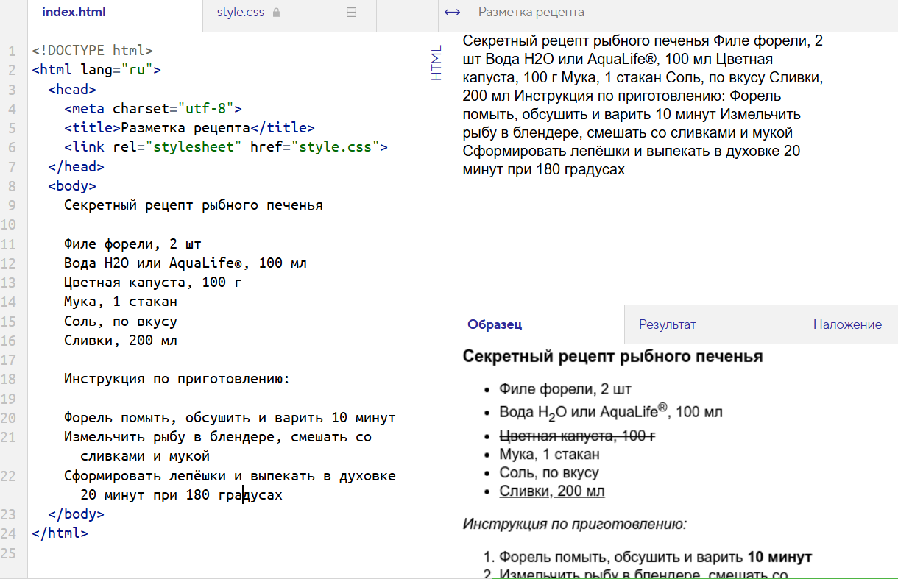

Секретный рецепт рыбного печенья Филе форели, 2 шт Вода H2O или AquaLife®, 100 мл Цветная капуста, 100 г Мука, 1 стакан Соль, по вкусу Сливки, 200 мл Инструкция по приготовлению: Форель помыть, обсушить и варить 10 минут Измельчить рыбу в блендере, смешать со сливками и мукой Сформировать лепёшки и выпекать в духовке 20 минут при 180 градусах
Инструкция по приготовлению:
